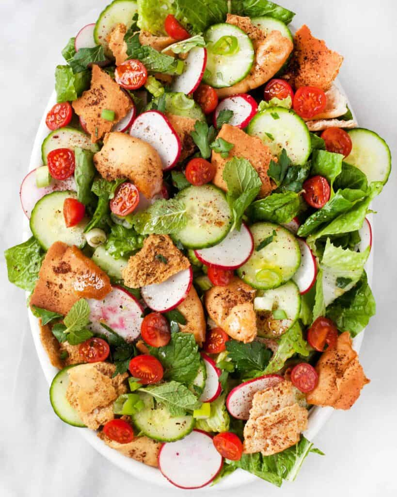

Fattoush

Description
Fattoush is a popular salad in Lebanon made with mixed greens, a lemony vinaigrette and pita bread pieces. Toasting the pita adds crunch and a sprinkle of ground sumac--which grows wild all over Lebanon--adds depth. Let the salad sit for a bit to let the pita soak up the lemony dressing.
Ingredients
- Salad
- 2 6-inch whole-wheat pitas,split
- 3 tbsp extra-virgin olive oil, divided
- 1 ¼ tsp ground sumac (see Note), divided
- ¼ cup lemon juice
- ½ tsp salt
- ¼ tsp freshly ground pepper
- 1 large head romaine lettuce, coarsely chopped
- 2 large tomatoes, diced
- 2 small salad cucumbers, or 1 large cucumber, seeded and diced (peeled if desired)
- ½ cup thinly sliced red onion
- ⅓ cup thinly sliced fresh mint
- 1 ½ pounds boneless, skinless chicken breasts, trimmed
- 1 ½ tsp extra-virgin olive oil
- ¼ tsp salt
- ⅛ tsp freshly ground pepper
Steps
- To prepare salad: Preheat oven to 350°F. Place pita halves rough-side up on a large baking sheet. Brush with 1 tablespoon oil and sprinkle with 1 teaspoon sumac. Bake until golden and crisp, about 15 minutes. When cool, break into bite-size pieces.
- Whisk lemon juice, salt, pepper, the remaining 2 tablespoons oil, and 1/4 teaspoon sumac in a large bowl. Add lettuce, tomatoes, cucumber, onion, mint, and the pita pieces; toss to coat. Let stand for 15 minutes.
- To prepare chicken: Meanwhile, preheat grill to medium-high. Rub the chicken with oil and season with salt and pepper. Grill until no longer pink inside, 3 to 4 minutes per side. (Alternatively, broil chicken 4 to 6 inches from the heat source for about 6 minutes per side.) Slice the chicken thinly and serve on top of the salad.
Home